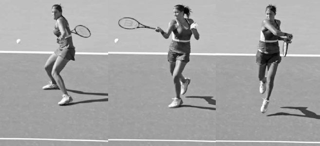
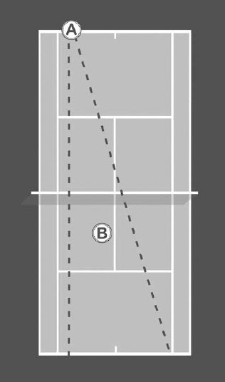

Đánh bóng tấn công — Tiến lên lưới¶
Vị trí thuận lợi này trên cú đánh tiếp cận sau đó cho phép anh vào vị trí gần lưới hơn cho cú vô lê của mình, khiến cú vô lê đầu tiên của anh được thực hiện gần lưới hơn khoảng 30cm và cao hơn khoảng 13cm so với mức trung bình của anh. Kết quả là, Federer kiểm soát lối chơi từ khu vực gần lưới, nâng tỷ lệ thắng điểm khi lên lưới lên tới 75% trong một số trận đấu của anh tại giải đấu đó.(1) Trong chương này, tôi sẽ bắt đầu bằng việc trình bày các loại cú đánh tiếp cận khác nhau. Sau đó tôi sẽ bàn về những phẩm chất của cú đánh tiếp cận giúp bạn thắng điểm khi lên lưới, cách di chuyển về phía trước đúng cách, và vị trí đứng sân tối ưu sau cú đánh tiếp cận. Tiếp theo, tôi sẽ giải thích hai cách tấn công lưới trực tiếp hơn khác: giao bóng lên lưới và đỡ giao bóng cắt rồi lên lưới. Tôi sẽ kết thúc chương với các bài tập giúp cải thiện kỹ năng chuyển đổi lên lưới của bạn.

Madison Keys đánh mạnh cú tiếp cận về góc trái tay.
I. Các Loại Cú Đánh Tiếp Cận¶
CÚ ĐÁNH TIẾP CẬN THƯỜNG ĐƯỢC THỰC HIỆN từ vị trí cách vạch cuối sân vài mét vào trong sân và đưa bóng sâu sang phía bên kia sân. Nếu bóng cao hơn eo và bạn có chút thời gian chuẩn bị, một cú đánh tiếp cận phẳng hoặc xoáy lên mạnh mẽ thường là lựa chọn tốt nhất (hình trên). Trong lối chơi sức mạnh ngày nay, loại cú đánh tiếp cận này đã trở thành cách tấn công lưới chủ đạo, tuy nhiên vẫn còn nhiều loại cú đánh tiếp cận khác cần cân nhắc.
1. CẮT¶
Cú đánh tiếp cận cắt có thể thực hiện nhanh, nên thường hợp lý khi thời gian eo hẹp. Ngoài ra, vì mặt vợt mở, nó thường được dùng với những quả bóng thấp. Ưu điểm của cú đánh tiếp cận cắt là bóng giữ độ thấp, buộc đối phương phải đánh passing shot hướng lên, và tốc độ chậm hơn của nó cho bạn nhiều thời gian hơn để tiến gần lưới và vào vị trí tốt cho cú vô lê.
2. VÔ LÊ CÓ ĐÀ VUNG¶
Cú vô lê có đà vung (xem trang 180) ngày càng phổ biến trong lối chơi lên lưới hiện đại.
Nó thường được dùng với những quả bóng cao, lửng lơ mà nếu không xử lý sẽ rơi gần giữa sân. Sức mạnh của cú vô lê có đà vung dồn ép đối phương, khiến họ khó thực hiện những cú passing shot chính xác.
3. XOÁY LÊN CAO¶
Một cú đánh xoáy lên cao, sâu vào góc sân có thể là một cú đánh tiếp cận hiệu quả, đặc biệt ở trình độ nghiệp dư. Cú đánh này cho bạn thời gian di chuyển gần lưới để vô lê và đẩy đối phương lùi sâu sau vạch cuối sân vào thế phòng thủ.
4. BỎ NHỎ¶
Cú bỏ nhỏ không phải là một cú đánh tiếp cận \"cổ điển\" nhưng chắc chắn là một cú đánh có thể cho phép bạn tiến lên lưới và sử dụng kỹ năng vô lê của mình. Một cú bỏ nhỏ tốt sẽ khiến đối phương phải chạy đua lên phía trước, để lại một khoảng trống lớn không được bảo vệ trên sân để bạn đặt cú vô lê.
Cần nhớ, mặt sân là yếu tố quan trọng khi chọn loại cú đánh tiếp cận hiệu quả nhất. Trên các mặt sân nhanh hơn, nơi tấn công lưới là trọng tâm chiến thuật, việc chuẩn bị nhanh của cú đánh tiếp cận cắt cho phép bạn tiến lên vô lê thường xuyên hơn. Ngược lại, trên các sân đất nện chậm hơn, nơi bóng thường nảy cao hơn, cú đánh tiếp cận xoáy lên cao có thể là lựa chọn hiệu quả. Hãy nhớ mặt sân cũng sẽ ảnh hưởng đến lượng thời gian đối phương có để chuẩn bị cho cú passing shot của họ. Vì vậy, bạn phải chọn lọc kỹ hơn với các cú đánh tiếp cận trên sân đất nện chậm so với khi chơi trên sân cứng nhanh.
II. Các Phẩm Chất Của Cú Đánh Tiếp Cận¶
THỨ NHẤT, ĐÁNH BÓNG SÂU về phía vạch cuối sân là ưu tiên hàng đầu khi thực hiện cú đánh tiếp cận (trừ khi bạn dùng cú bỏ nhỏ). Bạn đánh cú tiếp cận càng sâu, đối phương càng có ít thời gian để căn chỉnh cú passing shot sau khi bóng nảy. Thứ hai, cú đánh tiếp cận thường tốt nhất khi nhắm vào cú đánh nền yếu hơn của đối phương. Thứ ba, thường hợp lý khi đánh cú tiếp cận về phía buộc đối phương phải chạy quãng đường xa nhất. Điều này không chỉ buộc đối phương phải đánh passing shot trong thế mất cân bằng, mà còn mở ra phía bên kia sân cho một cú vô lê ăn điểm. Thứ tư, nếu đối phương đang gây khó khăn cho bạn bằng những cú passing shot có góc độ, một cú đánh tiếp cận sâu về giữa sân có thể là một chiến thuật hiệu quả. Bằng cách đánh về giữa sân, bạn hạn chế các góc độ có sẵn cho đối phương và gần như đảm bảo cơ hội cho cú vô lê của bạn sau cú đánh tiếp cận.
III. Di Chuyển Trên Cú Đánh Tiếp Cận¶
CÁCH BẠN DI CHUYỂN ĐẾN BÓNG sẽ là một phần không thể thiếu trong thành công của cú đánh tiếp cận. Một bước đầu tiên mạnh mẽ là chìa khóa để di chuyển tốt, nên trước cú đánh tiếp cận, bạn nên hơi nghiêng người về phía trước và tìm kiếm cơ hội tấn công lưới. Nếu những bước đầu tiên của bạn dứt khoát, bạn sẽ có nhiều thời gian hơn để đảm bảo vị trí tốt cho cú đánh tiếp cận.
Sau khi thực hiện bước di chuyển đầu tiên mạnh mẽ, trên hầu hết các cú đánh tiếp cận, thân người bạn sẽ cần giảm tốc khi chuẩn bị vung vợt. Tuy nhiên, cũng như bất kỳ cú đánh nền nào, cú đánh tiếp cận liên quan đến bộ pháp chân linh hoạt, biến đổi. Với một quả bóng cao, bạn có thể có thời gian dừng lại, dồn lực lên chân ở tư thế bán mở, và đánh một cú tiếp cận xoáy lên tấn công. Ngược lại, với một cú tiếp cận xoáy lên từ một quả bóng ở vị trí gần hơn và độ cao thấp hơn, chân trước sẽ bước về phía trước, cắm xuống, rồi nhảy trong lúc kết thúc động tác (hình dưới). Di chuyển qua cú đánh tiếp cận theo cách này sẽ giúp bạn tiến gần lưới hơn cho cú vô lê.
HỘP HUẤN LUYỆN VIÊN: Nếu có thời gian, hãy đo các bước chân khi bạn di chuyển về phía trước và thiết lập cùng tư thế đứng trên cú đánh tiếp cận như bạn sẽ dùng khi đánh một cú đánh nền từ vạch cuối sân. Ví dụ, trên cú tiếp cận thuận tay, nếu bóng thấp, hãy dùng tư thế trung lập. Nếu bóng cao hơn, tư thế mở sẽ phát huy tốt hơn. Người chơi thường trở nên căng cứng khi di chuyển về phía trước và bộ pháp chân của họ bị ảnh hưởng. Hãy dành thời gian tập luyện riêng cho cú đánh tiếp cận để học bộ pháp chân và xây dựng sự tự tin. Điều này sẽ giúp bạn tránh đánh cú tiếp cận ở một tư thế xa lạ, thiếu sự cân bằng và căn chỉnh hông cần thiết để thực hiện một cú đánh mạnh mẽ.
Khi đánh một cú tiếp cận cắt, cách di chuyển đúng là lướt qua cú đánh với đôi chân giữ sát mặt đất và thân người thấp, cân bằng. Cú đánh cắt cần ít phản lực từ mặt đất, nên bạn có thể di chuyển về phía trước nhiều hơn trong lúc vung vợt so với khi đánh một cú tiếp cận xoáy lên. Bước carioca thường được dùng trên cú tiếp cận cắt, đặc biệt ở bên trái tay. Bước này có chân sau di chuyển ra sau rồi ra trước chân trước trong lúc vung vợt (hình phải). Dùng bộ pháp chân này cho phép bạn xoay thân người hoàn toàn và tiếp xúc bóng với vị trí và sự cân bằng tốt.

Trên cú đánh tiếp cận này, Djokovic dùng bước nhảy tiến rồi đưa chân sau vòng qua và ra trước để tăng tốc di chuyển lên lưới.

Tomáš Berdych dùng bước carioca để giữ thân người theo phương ngang trong lúc tiếp xúc trên cú tiếp cận cắt này.
IV. Vị Trí Đứng Sân¶
SAU KHI HOÀN TẤT BẤT KỲ CÚ ĐÁNH TIẾP CẬN NÀO, điều quan trọng là di chuyển về phía trước nhanh chóng. Bạn vào vị trí ở lưới càng gần, cú vô lê của bạn càng dễ dàng và tấn công hơn. Trong lúc di chuyển về phía trước, hãy theo dõi bóng, thiên về phía bạn đã đánh cú tiếp cận. Ví dụ, nếu bạn đánh cú tiếp cận về phía vạch đơn bên sân deuce, bạn nên thực hiện bước tách chân cách đường giữa sân khoảng nửa mét về phía trái (hình trái). Điều này sẽ đặt bạn vào điểm giữa của các góc passing shot dọc dây và chéo sân.
Khi tấn công lưới, bạn nên thiên về phía sân mà đối phương đang đánh cú passing shot của họ. Ở hình trên, bằng cách đứng hơi lệch trái so với đường giữa sân, ta thấy Người Chơi B đang ở điểm giữa các góc passing shot của Người Chơi A.
Hầu hết các cú đánh tiếp cận nên được đánh dọc dây vì khi đó bạn ở đúng phía sân để chia đôi các góc passing shot có thể của đối phương. Cú đánh tiếp cận chéo sân có thể nguy hiểm vì khoảng cách bổ sung bạn cần bao quát để đến điểm giữa của các góc passing shot của đối phương.
Sau khi thực hiện bước tách chân và vào vị trí tốt ở lưới, hãy chuẩn bị tinh thần và thân người sẵn sàng hành động, và cố gắng đoán trước ý đồ passing shot của đối phương bằng cách đọc hướng thân người của họ và cân nhắc những cú đánh ưa thích của họ. Luôn giữ trọng lượng trên mũi bàn chân và duy trì sự hiện diện tấn công ở lưới. Hãy để đối phương biết rằng bạn thích đứng ở đó và sẵn sàng nhanh chóng chụp lấy bất kỳ cú tạt bóng bổng hay passing shot nào bị đánh sai hướng.
V. Các Cách Tấn Công Lưới Khác¶
GIAO BÓNG LÊN LƯỚI và ĐỠ GIAO BÓNG CẮT RỒI LÊN LƯỚI cho phép bạn tấn công lưới trực tiếp hơn so với cú đánh tiếp cận. Sử dụng hai chiến thuật này khiến lối chơi của bạn linh hoạt hơn và mang lại thêm lựa chọn để khai thác điểm yếu của đối phương và tận dụng thế mạnh của bạn.
1. GIAO BÓNG LÊN LƯỚI¶
Lối chơi giao bóng lên lưới, trong đó một người chơi giao bóng rồi lập tức chạy lên vô lê, từng là chiến thuật giao bóng chủ đạo trên ATP. Điều này không còn đúng nữa. Tại chung kết đơn nam Wimbledon năm 2001, các tay vợt đã giao bóng lên lưới 243 lần.(2) Ngược lại, tổng cộng có chưa đến 150 lần giao bóng lên lưới trong tất cả các trận chung kết đơn nam Wimbledon từ năm 2004 đến 2013.(3) Lý do chính của sự thay đổi này là trang thiết bị mới đã cải thiện chất lượng của các cú đỡ giao bóng và passing shot, khiến giao bóng lên lưới trở thành một chiến thuật bất ngờ thay vì là nền tảng như trước đây.
Dù vậy, giao bóng lên lưới vẫn có thể là một phần thành công trong kế hoạch thi đấu của bạn. Nếu vô lê là điểm mạnh trong lối chơi của bạn, hoặc nếu các cú đánh nền của bạn không có ưu thế so với đối phương, thì việc tiến lên sau một cú giao bóng mạnh để dứt điểm bằng một cú vô lê dễ dàng có thể mang lại lợi thế cho bạn trong trận đấu.
Ngoài ra, xen kẽ một số pha giao bóng lên lưới có thể gieo nghi ngờ trong đầu đối phương về cách đỡ giao bóng tốt nhất. Khi người giao bóng lên lưới, cú đỡ giao bóng tốt nhất là thấp và rộng; tuy nhiên, khi người giao bóng ở lại vạch cuối sân, cú đỡ giao bóng tốt nhất là cao và sâu hơn. Đây là hai kiểu đỡ giao bóng trái ngược nhau, và nếu bạn thay đổi lối chơi, bạn có thể khiến đối phương bối rối và buộc họ mắc thêm lỗi. Nếu bạn luôn ở lại vạch cuối sân sau giao bóng, bạn cho phép đối phương đỡ bóng cao qua lưới mà không phải chịu hậu quả tiêu cực ngay lập tức. Bằng cách thỉnh thoảng giao bóng lên lưới, bạn sẽ buộc đối phương phải đánh những cú đỡ giao bóng thấp hơn và rủi ro hơn.
Sau khi Taylor Dent giao bóng, anh di chuyển về phía trước, thực hiện bước tách chân, và đẩy bằng chân phải để di chuyển sang trái và vô lê.
A. DI CHUYỂN VÀ VỊ TRÍ ĐẶT CÚ VÔ LÊ ĐẦU TIÊN¶
Khi bạn giao bóng lên lưới, hãy tung bóng hơi xa hơn về phía trước khi giao bóng. Điều này sẽ tạo đà tiến tốt cho việc di chuyển của bạn lên lưới. Sau khi bạn giao bóng và chân trái chạm đất, đẩy bằng chân đó và bước chân phải về phía trước (hình ngoài cùng trái). Tiếp tục di chuyển về phía trước và thực hiện bước tách chân để lấy lại thăng bằng ngay trước khi đối phương đánh cú đỡ giao bóng (hình giữa). Sau bước tách chân, đẩy bằng chân trái để di chuyển sang phải và chân phải để di chuyển sang trái (hình ngoài cùng phải). Ngoài ra, hãy nhớ rằng vì vị trí đứng sân trên cú vô lê đầu tiên rất quan trọng, những cú giao bóng nhanh không phải lúc nào cũng là lựa chọn tốt nhất. Một số tay vợt giao bóng lên lưới xuất sắc nhất trong quá khứ, như Patrick Rafter và Stefan Edberg, đã dùng những cú giao bóng xoáy thay vì những cú giao bóng phẳng mạnh mẽ. Điều này cho phép họ vào gần lưới hơn cho cú vô lê đầu tiên.
Vị trí đặt cú giao bóng và cú vô lê đầu tiên nên được phối hợp với nhau. Đặt cú giao bóng rộng sẽ mở ra phía bên kia sân cho cú vô lê đầu tiên của bạn. Ngược lại, giao bóng vào giữa (\"T\") thường khiến cú vô lê góc ngắn về phía nơi vạch giao bóng gặp vạch đơn trở thành lựa chọn thông minh. Nếu bạn thấy mình mất thăng bằng hoặc bị dồn ép trên cú vô lê sau một cú đỡ giao bóng mạnh, hãy đánh cú vô lê sâu về giữa sân để hạn chế góc độ của đối phương cho cú đánh tiếp theo và cho bản thân thời gian hồi vị và chuẩn bị cho cú vô lê thứ hai. Nếu bạn đang cân bằng, hãy di chuyển về phía trước để đón bóng và đánh cú vô lê dứt khoát vào khoảng trống hoặc về phía cú đánh nền yếu hơn của đối phương.
2. ĐỠ GIAO BÓNG CẮT RỒI LÊN LƯỚI¶
Đỡ giao bóng cắt rồi lên lưới, trong đó bạn lập tức lao lên lưới ngay sau khi đỡ giao bóng, là một cách tốt khác để nhanh chóng tấn công lưới. Kiểu đỡ giao bóng này khó thực hiện trước những đối thủ giao bóng mạnh, nhưng với hầu hết người chơi nghiệp dư, đây có thể là một chiến thuật bất ngờ được dùng thường xuyên hoặc hiệu quả.
Bắt đầu pha đỡ giao bóng cắt rồi lên lưới bằng cách đứng cách vạch cuối sân khoảng 1 đến 1,2 mét vào trong sân và đặt vợt vào cách cầm continental. Khi đối phương tung bóng, bắt đầu di chuyển về phía trước và đánh cú đỡ giao bóng sớm bằng kỹ thuật vung vợt kiểu vô lê. Lướt qua cú vung rồi nhanh chóng lao về phía trước và thực hiện bước tách chân tại điểm giữa các góc passing shot của đối phương.
VI. Bài Tập Đánh Tiếp Cận¶
1. TIẾP CẬN VÀ VÔ Lʶ
Mục tiêu: Học cách chuyển đổi tốt từ cuối sân lên lưới.
Đưa một quả bóng ngắn cho đối tác tập luyện đang đứng ở vạch cuối sân. Họ đánh cú đưa bóng đó như một cú tiếp cận và di chuyển lên vô lê. Chơi hết điểm bóng dọc dây trong nửa sân. Lặp lại cho đến khi một người đạt 11 điểm rồi đổi vai trò.
Biến thể: Sau khi cú vô lê đầu tiên được thực hiện, toàn bộ sân sẽ được sử dụng để chơi hết điểm bóng còn lại.
2. VÔ LÊ CÓ ĐÀ VUNG¶
Mục tiêu: Rèn luyện kỹ thuật và khả năng căn thời gian trên cú vô lê có đà vung.
Đưa một quả bóng cao cho đối tác tập luyện, người này di chuyển từ vạch cuối sân, đánh một cú vô lê có đà vung, rồi tiếp tục tiến lên vô lê. Chơi hết điểm bóng. Người đầu tiên đạt 15 điểm thắng ván rồi đổi vai trò.
3. ĐỠ GIAO BÓNG CẮT RỒI LÊN LƯỚI¶
Mục tiêu: Luyện tập cú đỡ giao bóng và ngay lập tức tấn công lưới.
Giao bóng cho đối tác tập luyện của bạn, họ đánh cú đỡ và ngay lập tức di chuyển lên vô lê. Đối tác tập luyện của bạn thắng hai điểm nếu họ thắng điểm sau khi nhận một cú giao bóng thứ nhất, và một điểm nếu họ thắng điểm sau cú giao bóng thứ hai. Người đầu tiên đạt 15 điểm thắng ván rồi đổi vai trò.
Biến thể: Chỉ cho phép một cú giao bóng, hoặc chỉ định một phía sân bắt buộc cú đỡ giao bóng phải được đánh vào.

Djokovic là một ví dụ về tay vợt đã học cách tấn công lưới nhiều hơn khi sự nghiệp chuyên nghiệp của anh tiến triển.